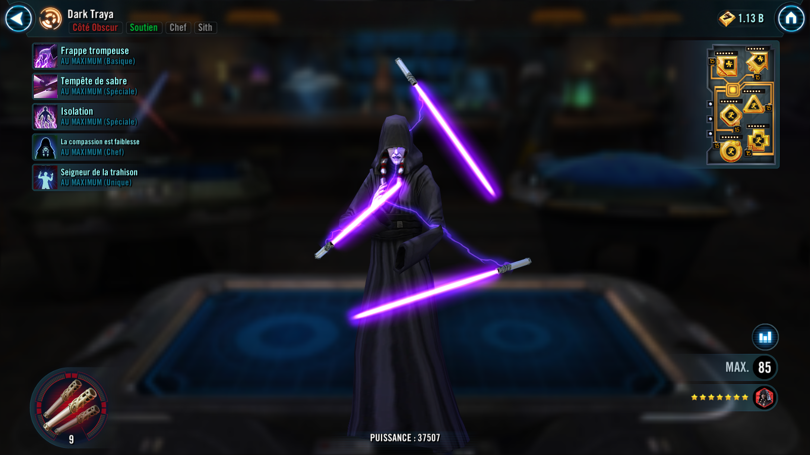
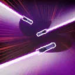

Darth Traya
Sith support who punishes enemies for relying on others
Sith support who punishes enemies for relying on others

Deal Special damage to target enemy and Daze them for 2 turns. Traya inflicts all debuffs on allies to target enemy for 1 turn. If any debuffs were inflicted, reduce the cooldown of Saber Storm by 1.

Deal Special damage to target enemy and inflict Tenacity Down for 2 turns. If Traya has full Health, deal damage an additional time and inflict Ability Block for 2 turns. If the target is buffed, deal damage an additional time and inflict Healing Immunity for 2 turns. This attack can't be Evaded.
Dispel all buffs on target enemy, increase their cooldowns by 1, and inflict Isolate on target enemy until another enemy is Isolated or Traya is defeated. Reduce target ally's cooldowns by 1 and grant them Protection Up (50%) until the end of the encounter. Isolate can't be copied, dispelled, or resisted. This attack can't be evaded or resisted.
Isolate: Can't gain buffs; can't attack or gain positive effects out of turn; allies can't attack or gain positive effects during this unit's turn
Raid bosses and Galactic Legends: Can't gain buffs; characters damaging this unit gain Critical Damage Up and Health Steal Up for 1 turn
Sith allies have +40% Critical Avoidance and +40% Potency. When a debuffed enemy takes damage, all Sith allies recover 10% Health. When an enemy uses an ability outside of their turn, they take damage equal to 35% of their Max Health. This damage can't defeat enemies. When an enemy gains a buff outside of their turn, they lose 50% Offense until the end of their next turn.
When an ally suffers a debuff, Darth Traya gains +10% Bonus Protection (stacking) until the end of her next turn. At the start of each Sith ally's turn, Traya dispels all debuffs on them and deals damage equal to 5% of their Max Health (max 75%) for each debuff dispelled. When allied Darth Nihilus or Darth Sion are critically hit or inflicted with a debuff, Traya gains +12% Offense (stacking) for 2 turns.
Omicron Boost : While in Grand Arenas and if there are no enemy Dark Side Galactic Legends: Sith allies gain 40% Critical Damage, Max Health, and Offense. When a Sith ally suffers a debuff, they gain 10% Bonus Protection (stacking) until the end of their turn. At the start of each Sith ally's turn, Traya dispels all debuffs on them and all Sith allies gain 5% Critical Damage, Health Steal, Max Health, and Offense (stacking, max 100%) until the end of the encounter. When an allied Darth Talon is critically hit or inflicted with a debuff, Traya gains 12% Offense (stacking) for 2 turns. When an allied Darth Nihilus, Darth Sion, or Darth Talon's Health falls below 90% for the first time, their cooldowns are reset.